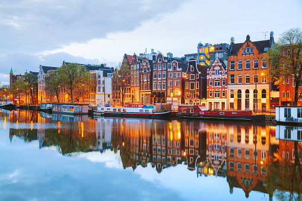
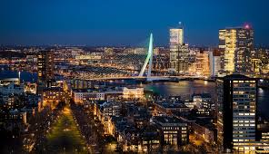
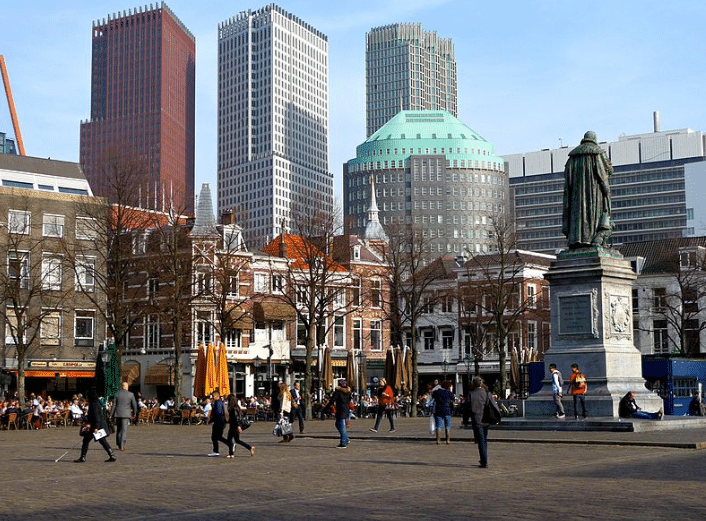
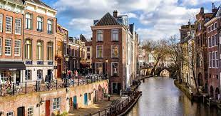
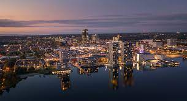

Thera are big and beatiful cities in the Nederlands.Such as: Amsterdam, Rotterdam, Hague, Utrecht, and Almere. It was about these cities that made descriptions.
Amsterdam
 This is the capital of the Nederlands. It this the largest city in the Nederlands,has an ideal architecture,is one of the most fun cities with the most entertainment.Today, Amsterdam is one of Europe’s most visited cities and attracts millions of tourists every year. Tourists come for attractions like coffeeshops, the Red Light Districts, museums like Rijksmuseum, Amsterdam Museum, Van Gogh Museum, Anne Frank House, Maritime Museum, Royal Palace on the Dam Square, Stedelijk Museum, Diamond Museum, Eye Film Museum, Ons Lieve Heer op Solder, Ripley’s Believe it or Not, Red Light Secrets Museum of Prostitution, Kattenkabinet, Foam Museum, Museum Vrolik, Cannabis Museum, Tropenmuseum and Nemo Science Museum.
Rotterdam
 This is the second largest city, major European port and municipality in the Netherlands. Rotterdam is called the city of modern architecture.The center of Rotterdam is built up with futuristic buildings according to the most daring architectural designs. It seems that you are on the set of one of the fantastic films about the future. During the day it is a city of everyday business life. In the evening, numerous nightclubs open their doors. Moreover, in Rotterdam, each of the subcultures has its own places for recreation and entertainment. It is in this city, and not in Amsterdam, that the best discos in the Netherlands are located, but finding them without a local guide will be problematic. And the famous coffee shops are cheaper here than in the capital.
Hague
 This is a city and municipality of the Netherlands, situated on the west coast facing the North Sea. It is the administrative and royal capital of the Netherlands and its seat of government, as well as the capital of the province of South Holland. It hosts the International Court of Justice and the International Criminal Court. With a population of over half a million, it is the third-largest city in the Netherlands, after Amsterdam and Rotterdam.
Utrecht
It is a city and municipality in the Netherlands, the capital of the Utrecht province. With 361,924 inhabitants on 31 January 2022, Utrecht is the fourth most populous municipality in the Netherlands. Utrecht is one of the oldest cities in the Netherlands. In addition, the city attracts the attention of people interested in design and architecture. It was in Utrecht that the most famous artist and illustrator in the Netherlands, Dik Bruna, and the architect Gerrit Rietveld, who built the miracle of functionalism – the Schröder House in 1924, which was about 50 years ahead of its time, worked. You can see the fruits of creativity of the geniuses of the 20th century in the Central Museum of Utrecht.
Almere
 Dutch Almere is only 43 years old. This is the youngest city in the Netherlands, but it is also the fastest growing. The concentration of objects of modern architecture per square kilometer in the city center rolls over.The modern city also attracts lovers of rest in picturesque natural places. The incredibly beautiful national reserve Oostvaardersplassen is located in its vicinity. It is well-equipped for recreation, here, near the lakes, complexes of ecological houses were built, in which everyone can spend a few days. There are also interesting museums here. For example, Veiligheidsmuseum PIT, which presents cars (policemen, firefighters, ambulances). Despite the fact that the museum is quite small, you can stay here all day.